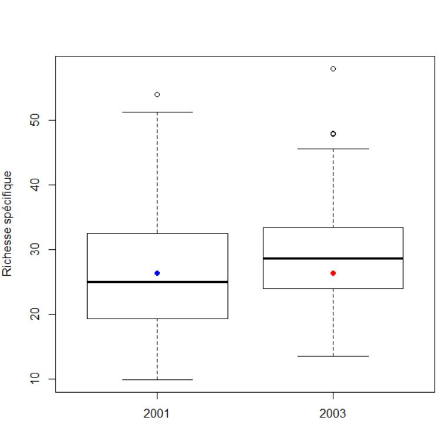
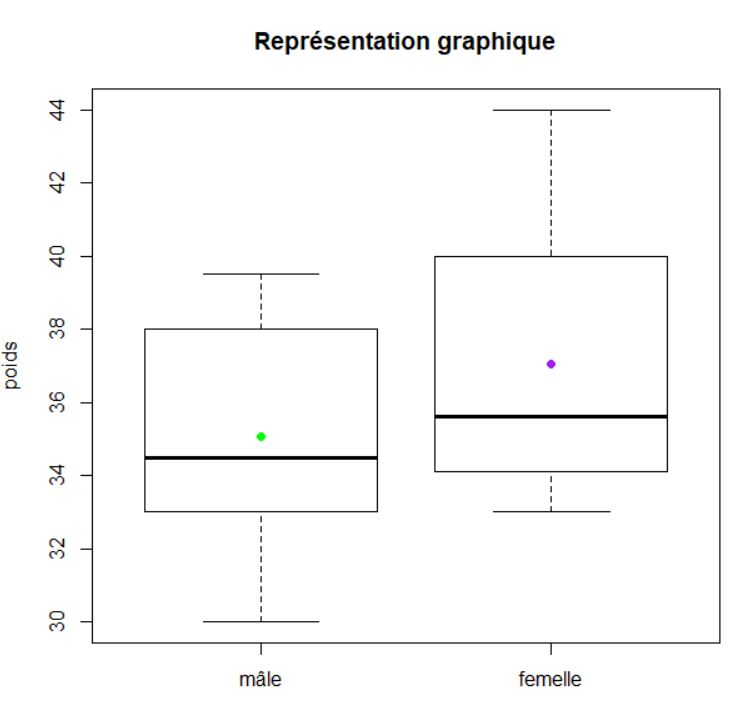

Exercice 1
Question biologique: y-a-t-il une différence significative entre la richesse en 2 années
BI <- read.table("birds.txt", sep="\t", header=T, row.names =1)
head(BI)
Echantillons indépendants
dim(BI) # grands échantillons
Test Z
Test de Normalité
H0: pas d différence significative entre la variable et ce qui serait la variable si elle suivait une loi normale
H1 : différence significative entre la variable et ce qui serait la variable si elle suivait une loi normale
shapiro.test(BI$rs1)
pvalue< 0.05 donc Ho est rejeté
shapiro.test(BI$rs3)
pvalue < 0.05 donc H0 est rejeté
shapiro.test(log(BI$rs1))
pvalue > 0.05 donc normalité
shapiro.test(log(BI$rs3))
pvalue > 0.05 donc normalité
Test Z
H0 : pas d différence significative entre les richesses moyennes de 2001 à 2003
H1 : différence significative entre les richesses moyennes de 2001 à 2003
library(BSDA)
z.test(log(BI$rs1), log(BI$rs3), sigma.x=sd(log(BI$rs1)), sigma.y=sd(log(BI$rs3)), alt="less")
Il y a une différence significative entre 2001 et 2003. La richesse spécifique est plus évoluée en 2003
Representation graphique
lab <- c("2001","2003")
boxplot(BI$rs1, BI$rs3, names = lab, ylab ="Richesse spécifique")
points(1, mean(BI$rs1),pch=16,col="red")
points(2,mean(BI$rs1),pch=16, col="blue")

Exercice 2
Ces données confirment-elles l'hypothèse d'une réduction du domaine vital de l'élan durant la période hivernale ?
ha <- read.table("elan.csv", sep=",", header=T, row.names =1)
ha
Echantillon appariés
dim(ha) # petits échantillons
H0: il n'y a pas de différence significative entre les deux périodes
H1: il y a une différence significative entre les deux périodes
shapiro.test(ha$Hiver)
pvalue > 0.05 donc normalité
shapiro.test(ha$Printemps)
pvalue > 0.05 donc normalité
t.test(ha$Printemps, ha$Hiver, var.equal =F, paired = T, alt="greater")
pvalue < 0.05 donc H1 : il y a une différence significative entre les deux périodes
Saison <- c("Printemps", "Hiver")
boxplot(ha$Printemps, ha$Hiver, main = "Représentation graphique", ylab = "taille domaine vital de l'élan (ha)", names =Saison)
points(2,mean(ha$Hiver), pch=16, col="yellow")
points(1,mean(ha$Printemps), pch=16=, col="grey")

Exercice 3
Bufo <- read.table("toads.txt", sep="\t", header=T)
Bufo
Existe t-il une différence significative de poids entre les mâles et les femelles ?
Echantillons indépendants
dim(Bufo)
C'est un petit échantillon (19<30)
male <- subset(Bufo, sexe =="m")$poids
male
femelle <- subset(Bufo, sexe =="f")$poids
femelle
H0: il n'y a pas de différence significative de poids entre les mâle et les femelles H1: il y a une différence significative de poids entre les mâles et les femelles
shapiro.test(male)
pvalue >0.05 donc normalité
shapiro.test(femelle)
pvalue >0.05 donc normalité
var.test(male, femelle)
t.test(male, femelle, var.equal =F, paired = F, alt ="greater")
pvalue > 0.05 donc H0, il n'y a pas de valeurs significatives de poids entre les mâles et les femelles
sexe <- c("mâle", "femelle")
boxplot(male, femelle, main = "Représentation graphique", ylab = "poids", names =sexe)
points(1,mean(male), pch=16, col="green")
points(2,mean(femelle), pch=16, col="purple")

Exercice 4
fish <-read.table("pesticides.txt", sep="\t", header =T)
fish
A2 <- subset(fish, age =="2ans")$pesticides
A2
B2 <- subset(fish, age =="ax")$pesticides
B2
0.204 -> moy
Question 1
shapiro.test(A2)
pvalue < 0.05 donc H0 est rejeté, la variable n'est pas normale
essai en transformant
shapiro.test(log(A2))
pvalue < 0.05 donc H0 est rejeté, la variable n'est pas normale
test non paramétrique pour comparer une distribution à une moyenne connue
wilcox.test(A2, mu=moy)
pvalue > 0.05 do,c H0 est accepté et pas de différence significative
Question 2
mean(A2)
mean(B2)
la moyenne des poissons de 2 ans du Lac A est à priori plus grande que celle du Lac B
Question 3
Pas besoin de tester la normalité des poissons du Lac B car ceux du Lac A n'ont pas une distribution normale (voir Question 1)
test non paramétrique pour 2 échantillons indépendants
wilcox.test(A2, B2, alt="greater")
pvalue > 0.05 donc H0 n'est pas acceptée et il n'y a pas de différence significative
Question 4
A4 <- subset(fish, age=="4ans")$pesticides
A4
shapiro.test(A4)
pvalue > 0.05, donc H0 est accepté et il n'y a pas de différence significative
t.test(A4, mu=moy)
pvalue < 0.05 donc H0 est rejeté et la concentration moyenne en pesticides des poissons de 4 ans du Lac A est significativement plus grande que la moyenne nationale.
Question 5
shapiro.test(B2)
pvalue > 0.05 donc H0 est accepté, il n'y a pas de différence significative
t.test(A4, B2)
pvalue < 0.05 donc H0 est rejeté, il y a une différence significative
Exercice 5
mais <- read.table("mais.txt", sep="\t", header =T, row.names=1)
mais
mais2 <- mais[,-c(3,4,5,6,7,8,9)]
mais2
na.omit(mais2) -> mais3
mais3
plot(mais3$Hauteur, mais3$Masse, xlim=c(100,400), ylim=c(1000,3000), xlab="hauteur", ylab="masse", pch=16, col="blue")
N <- subset(mais3, Parcelle=="Nord")$Masse
N
S <- subset(mais3, Parcelle=="Sud")$Masse
S
shapiro.test(S)
pvalue > 0.05 donc H0 est accepté
shapiro.test(N)
pvalue > 0.05 donc H0 est accepté
var(S)
var(N)
var.test(log(S),log(N))
pvalue < 0.05 donc H0 est rejeté , il y a une différence significative
test non paramétrique
wilcox.test(S, N, paired=F)
pvalue <0.05 donc H0 est rejeté, il y a donc une valeur significative
boxplot(N, S, main = "Représentation graphique")
points(2,mean(S), pch=16, col="red")
points(1,mean(N), pch=16, col="blue")
Question 5
Hn <- subset(mais3, Parcelle=="Nord")$Hauteur
Hn
Ho <- subset(mais3, Parcelle=="Ouest")$Hauteur
Ho
shapiro.test(Hn)
pvalue > 0.05 donc H0 est accepté
shapiro.test(Ho)
pvalue > 0.05 donc H0 est accepté
var(Hn)
var(Ho)
var.test(Ho,Hn)
pvalue > 0.05 donc Homoscédasticité est accepté
mean(Hn)
mean(Ho)
t.test(Hn,Ho, var.equal=T, paired=F, alt="less")
pvalue < 0.05 donc la parcelle Nord a une hauteur plus grande que la parcelle ouest
dataH <- c(mean(Hn), mean(Ho))
dataH
datasdH <- c(sd(Hn), sd(Ho))
datasdH
labx <- c("Parcelle nord", "Parcelle ouest")
graph <- barplot(dataH, names = labx, space = 0.5, ylab= "Hauteur en cm", col = "blue", border ="blue", axes=T, ylim = c(0,350), cex.names = 1, las =0)
segments(graph, dataH-datasdH, graph, dataH+ datasdH, lwd=2)
arrows(graph, dataH-datasdH, graph, dataH+ datasdH, lwd=2, angle=90, code=2, length=0.05)
text(locator(1), "a")
text(locator(1), "b")
graph <- barplot(dataH, names = labx, space = 0.5, ylab= "Hauteur en cm", col = "green", border ="black",density=7, angle =45, axes=T, ylim = c(0,350), cex.names = 1, las =1)
segments(graph, dataH-0, graph, dataH+ datasdH, lwd=2)
arrows(graph, dataH-0, graph, dataH+ datasdH, lwd=2, angle=90, code=2, length=0.05)
text(locator(1), "a")
text(locator(1), "b")
Question f
H <- mais3$Hauteur
H
HJ7 <- mais3$Hauteur.J7
HJ7
Test de normalité
shapiro.test(H)
pvalue > 0.05 donc H0 est accepté, il n'y a pas de valeur différentes significative
shapiro.test(HJ7)
pvalue > 0.05 donc H0 est accepté, il n'y a pas de valeur différentes significative
t.test(H, HJ7, var.equal= F, paired=T)
pvalue > 0.05 donc H0 est accepté, il n'y a pas de valeur différentes significative
Exercice 6
Question 1
ogm<-read.table("ogm.csv", sep=',', header=T, row.names=1)
ogm
head(ogm)
Question 2
Représentation graphique
boxplot(ogm$foie~ogm$ogm, xlab="Teneur en ogm en %", ylab="Poids du foie", main="Poids du foie en fonction de la teneur en ogm")
Difficile de voir à première vue si il y a une différence entre les tailles des foies
Question 3
Selection des données
g0<-ogm[ogm$ogm==0,]
g0
g11<-ogm[ogm$ogm==11,]
g11
g22<-ogm[ogm$ogm==22,]
g22
g33<-ogm[ogm$ogm==33,]
g33
Question 4
On veut faire une comparaison du poids du foie 0 ogm avec ceux 11%, 22% et 33% ogm
test de t de Student si conditions car nombres < 30
Conditions: Normalité et homoscédasticité
shapiro.test(g0$foie)
Normalité ok
shapiro.test(g11$foie)
Normalité ok
shapiro.test(g22$foie)
Essai avec transformation
shapiro.test(log(g33$foie))
Pas de normalité
Donc peut être tests paramétriques de Student pour 11% et 22% et non-paramétrique de U Mann Whitney pour 33%
Homoscédasticité
var(g0$foie) # 0.47
var(g11$foie) # 0.58
var(g22$foie) # 1.29
var.test(g11$foie,g0$foie)# égalité des variances
var.test(g22$foie,g0$foie)# pas d'égalité des variances
Essai après tranformation
Attention si il faut une transformation pour avoir homoscédasticité, il faut être certain que cela ne change pas la normalité
shapiro.test(log(g22$foie))
Normalité ok
shapiro.test(log(g0$foie))
Normalité ok
var.test(log(g22$foie),log(g0$foie), na.rm=T)
Il n'y a pas d'égalité des variances
On récapitule:
-
tests paramétriques de Student pour 11% et non-paramétriques de U Mann Whitney pour pour 22% et 33%
-
Test paramétrique de Student pour 0% et 11%
t.test(g0$foie,g11$foie, var.equal=T)
Les poids moyens des foies de sont pas significativement différents entre 0% et 11% d'ogm
Test non-paramétrique U Mann Whitney pour 0% et 22%
wilcox.test(g0$foie,g22$foie)
Les poids moyens des foies de sont pas significativement différents entre 0% et 22% d'ogm
Test non-paramétrique U Mann Whitney pour 0% et 33%
wilcox.test(g0$foie,g33$foie)
Les poids moyens des foies sont significativement différents entre 0% et 33% d'ogm
Représentation graphique
boxplot(g0$foie,g33$foie, names=labO, ylab="Poids du foie", main="Poids du foie en fonction de la teneur en ogm")
barplot.
data<-c(mean(g0$foie), mean(g33$foie))
datasd<-c(sd(g0$foie), sd(g33$foie))
lab<-c("0% ogm", "33% ogm")
graph<-barplot(data,datasd, names=lab, space=0.5, ylab="Poids du foie", main="Poids du foie en fonction de la teneur en ogm", axes=T, cex.names=1, las=1, col="blue", border="blue", ylim=c(0,20))
segments(graph, data-0, graph, data+datasd, lwd=2)
arrows(graph, data-0, graph, data+datasd, lwd=2, angle=90, code=2, length=0.05)
text(locator(1), "a")
text(locator(1), "b")
Question 5
Il faut tuer un rat pour peser son poids